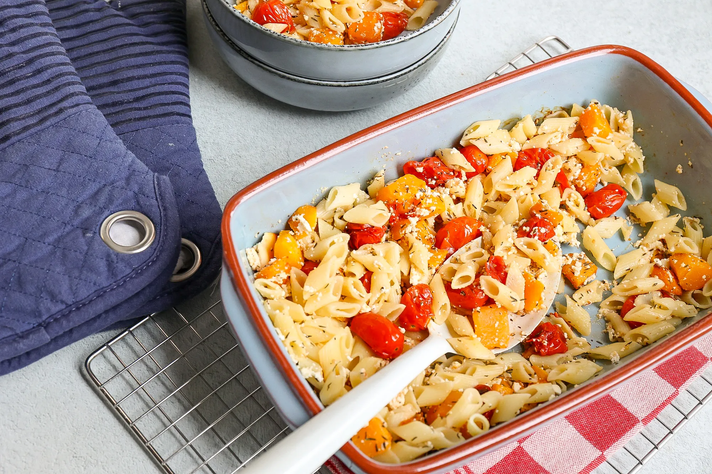

Passta Recept

Ingrediënten:
- 300 grams pasta (zelfgemaakte of geënts)
- 250 grams gezouten zout
- 1 eetlepel kaneel
- 1 eetlepel panko
- 1 el knoflook
- 1 el basilicum
- 1 el zalzam
- 1 el oregano
- 1 el paprika
- 1 el olijven
- 1 el koriander
- 1 el parsley
- 1 el cilantro
Bereiding:
- Kook in een pot
- Voeg er olie aan toe
- Steek het in de oven